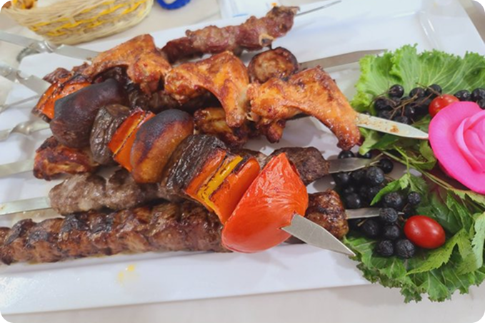

Designsta @inner · 25m
Twitterdagi ayol-erkak qarama-qarshiliklaringdan o'zinglar zerikmadinglarmi?
♡ 10 ⇄ 1 ♡ 8 ♧ ▥
What’s happening?
Designsta @inner · 25m
Twitterdagi ayol-erkak qarama-qarshiliklaringdan o'zinglar zerikmadinglarmi?
cloutexhibition @RajLahoti · 22m
YPIP dasturining bu yilgi sezoni ham o’z nihoyasiga yetmoqda. Mentorlik davomida talaba va yangi bitiruvchilarni o’sayotganini ko’rib hursand bo’ladi odam.
CreativePhoto @cloutexhibition · 1h
Обетда.....
Кечиринглар
